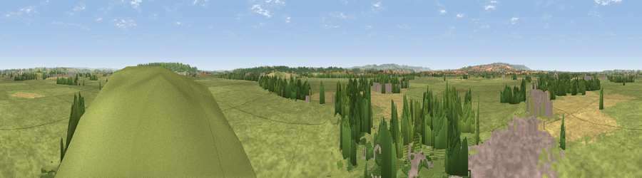

Viewpoint near Burrowbridge
#24768 in England · top 70% of its area beats it · near BurrowbridgeThe view, rendered

A 360° render of this exact spot computed from the terrain model, tree cover and land cover — summer colours, afternoon light, calibrated against photographs of famous viewpoints. Real trees, hedges and buildings will differ in detail.
The panorama
Grey silhouette: terrain skyline in each direction (720 bearings, Earth curvature and refraction included). Dashed green: skyline with trees (+15 m) and buildings (+8 m) as obstacles. Blue strip: how far the ground is visible on each bearing.
Where the view opens
Wedge length = distance to the farthest visible ground on that bearing (vegetation-aware). Rings at 10, 25 and 50 km.
What fills the view
76% grassland · 10% woodland · 10% cropland · 4% built-up
Angular shares of the visible panorama (visual magnitude), not map area. Landscape diversity 0.34 (0–1 Shannon).
Key numbers
More beautiful places nearby
The staircase of upgrades: each row has a higher view potential than everything closer. Driving times are estimates from straight-line distance, calibrated against real road routing — check an actual route before setting out.
| Place | Direction | Drive | Score |
|---|---|---|---|
| Viewpoint near Aller | E · 4 km | ~10 min | 61.8 |
| Viewpoint near Aller | E · 5 km | ~10 min | 64.2 |
| Viewpoint near Curry Mallet | SSW · 8 km | ~16 min | 68.0 |
| Socombe Hill | NNE · 8 km | ~16 min | 76.4 |
| Viewpoint near Enmore | WNW · 16 km | ~28 min | 77.6 |
| Viewpoint near Broomfield | W · 17 km | ~29 min | 78.5 |
| Cothelstone Hill | W · 17 km | ~30 min | 82.1 |
| Viewpoint near West Bagborough | W · 18 km | ~32 min | 84.3 |
51.07046, -2.91660 · source: screening · position refined by local search. Computed location — check access rights before visiting.